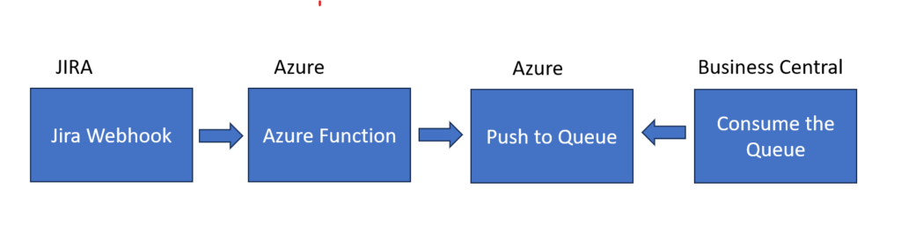
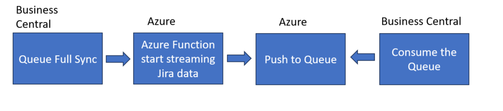
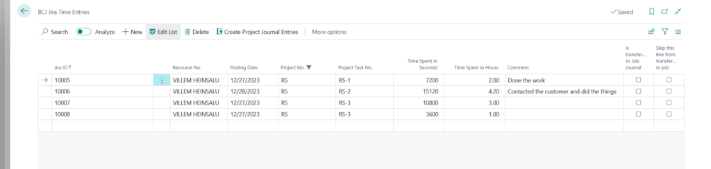
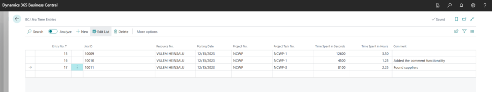

- Youtube video of demonstrating the project https://youtu.be/Y0uUsBXPBMU
- Github link to the project https://github.com/nocubicles/jiraandbcintegration
I had a need to improve how I work with customers and how I record the tasks and time and bill the customers. So I decided to start using Jira + Business Central.
But the problem is that there is no integration available between these two and so I had to built this myself.
I need to sync Projects and Tasks and Time entries from Jira to Business Central and when the time comes post the time entries against the Job Task to be able to bill the customer.
So how I architected and built the integration between these two software?
I decided to use webhooks in Jira and push the webhook data into a storage queue and then consume the queue in Business Central.
Why use the storage queue and not to post the webhook directly into BC? Couple of reasons:
- I would need some middleware anyway since I can't authenticate from Jira to BC directly
- BC can be down, extension can be deployed etc so posting directly is not very bullet proof
- using queues there's no hard coupling between these two, I can swap out Jira if I want to
- BC has API limits and might run into them
- I had old project implementing the Storage Queues available and I really like queues Azure Storage Queues in Business Central
This is what the high level architecture looks like:

Getting data from the webhook:
Doing full sync for all Jiras projects, issues and time entries.

Going into more detail I have a Azure Function written in C# which handles receiving the webhook from Jira and pushing it to the queue:
public class BCAndJiraProjectAndTask
{
[Function("SyncBCAndJiraProjectAndTask")]
public static async Task Run([HttpTrigger(AuthorizationLevel.Anonymous,"get","post")] HttpRequestData req,
FunctionContext executionContext)
{
var logger = executionContext.GetLogger("HttpExample");
logger.LogInformation("C# HTTP trigger function processed a request.");
var content = await new StreamReader(req.Body).ReadToEndAsync();
JiraTask jiraTask = JiraTask.FromJson(content);
StringBuilder message = new StringBuilder();
message.Append(jiraTask.Issue.Fields.Project.Key);
message.Append(';');
message.Append(jiraTask.Issue.Fields.Project.Name);
message.Append(";");
message.Append(jiraTask.Issue.Key);
message.Append(";");
message.Append(jiraTask.Issue.Fields.Summary);
message.Append(";");
message.Append(jiraTask.Issue.Id);
var response = req.CreateResponse(HttpStatusCode.OK);
response.Headers.Add("Content-Type","text/plain; charset=utf-8");
response.WriteString("Added to the queue");
return new JobAndTaskResponse()
{
// Write a single message.
Messages = new string[] { message.ToString() },
HttpResponse = response
};
}
}
public class JobAndTaskResponse
{
[QueueOutput("syncprojectandtask", Connection ="AzureWebJobsStorage")]
public string[] Messages { get; set; }
public HttpResponseData HttpResponse { get; set; }
} In Business Central I have a codeunit that I can schedule to process the queue. Thats using the project referenced before to communicate with the Storage Queue.
local procedure Process(Queue: Text): Boolean
var
AzureStorageQueueSdk: Codeunit AzureStorageQueuesSdk;
MessageBody: Text;
MessageId: Text;
MessageText: Text;
MessageTextList: list of [text];
MessagePopreceipt: Text;
Base64Convert: Codeunit"Base64 Convert";
begin
MessageBody := AzureStorageQueueSdk.GetNextMessageFromQueue(Queue);
if MessageBody = '' then
exit(false);
MessageId := AzureStorageQueueSdk.GetMessageIdFromXmlText(MessageBody);
MessageText := AzureStorageQueueSdk.GetMessageTextFromXmlText(MessageBody);
MessageText := Base64Convert.FromBase64(MessageText);
MessagePopreceipt := AzureStorageQueueSdk.GetMessagePopReceiptFromXmlText(MessageBody);
if (MessageId <> '') AND (MessageText <> '') then begin
MessageTextList := MessageText.Split(';');
if Queue = 'syncprojectandtask' then
if SyncJob(MessageTextList.Get(1), MessageTextList.Get(2)) and SyncJobTask(MessageTextList.Get(1), MessageTextList.Get(3), MessageTextList.Get(4), MessageTextList.Get(5)) then begin
//important here to check if delete is succesful and then commit. Otherwise we end in loop where messages are reappearing
if AzureStorageQueueSdk.DeleteMessageFromQueue(Queue, MessageId, MessagePopreceipt) then
Commit();
exit(true);
end;
if Queue = 'syncprojecttimeentries' then
if SyncJobTimeEntry(MessageTextList.Get(1), MessageTextList.Get(2), MessageTextList.Get(3), MessageTextList.Get(4), MessageTextList.Get(5), MessageTextList.Get(6)) then begin
//important here to check if delete is succesful and then commit. Otherwise we end in loop where messages are reappearing
if AzureStorageQueueSdk.DeleteMessageFromQueue(Queue, MessageId, MessagePopreceipt) then
Commit();
exit(true);
end;
end;
end;
